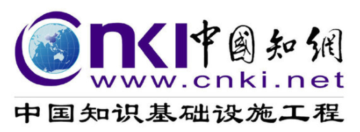
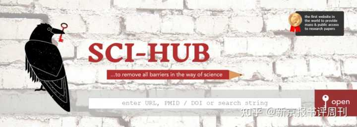

中科院因费用昂贵停用知网数据库
作者：刘亚光 - 新京报书评周刊

2022年4月8日，中国科学院文献情报中心称：同方知网技术有限公司(CNKI数据库出版商)暂停中科院对CNKI数据库的使用权限，即日起，CNKI科技类期刊和博硕士学位论文数据库无法下载。
据中科院文献情报中心反馈信息:自2008年以来，中国科学院文献情报中心承担全额订购费用，在全院范围内开通使用CNKI科技类期刊和博硕士学位论文数据库。多年来，CNKI数据库凭借其在中文期刊数据库市场上极具影响力的市场地位，对续订价格始终维持着较高涨幅。2021年，中科院集团CNKI数据库订购总费用达到千万级别，该数据库高昂的订购费用已成为中科院集团资源引进中的“巨无霸”。2022 ，中科院文献情报中心与同方知网(北京)技术有限公司就费用、订购模式展开积极讨论，但在多轮艰苦谈判后，CNKI数据库依然坚持接近千万的续订费用，其给出的集团组团方案在成员数量、单家价格方面条件相当苛刻。
根据上述情况，中科院文献情报中心正考虑通过维普期刊数据库和万方学位论文数据库对 CNKI数据库形成替代保障。
下面是新京报书评周刊对此事的评论。
数据库不断增长的权力：学术资源数字化进程的必然产物？
大型学术数据库对学术资源进行垄断并攫取超额利益的现象，不止困扰着中国的知识界，也困扰着世界各国。
某种程度上，中国知网当下陷入的争议与其建立的初衷是相悖的。1999年，知网的建设是“以全面打通知识生产、传播、扩散与利用各环节信息通道，打造支持全国各行业知识创新、学习和应用的交流合作平台”为总目标的。而如今，“侵权”和“定价高”却成为知网历来最常出现的两类争议点。
《南京大学学报》原执行主编朱剑在《清华大学学报》（哲学社会科学版）2022年第2期发文，就专门提及，由于中国学术期刊体制下学术期刊不成体系的结构和分散的布局，使得聚合性的学术资源平台构建极为困难，知网得以全面接过学术资源数字化传播的渠道，从而形成某种对学术资源的垄断。学术资源的生产者和消费者也实现了一种闭环——学者和学生们写作的论文被知网收录，但不仅无法收到报酬，自己下载论文却需要付费。
然而，知网是目前国内几乎唯一能同时提供期刊、硕博士论文、会议论文、报纸、年鉴全文的数据库，且能提供查重等服务，在市场中处于极为优势的地位。这也导致即便研究者对知网存在的问题有怨言，却也难以“绕开”知网从事学术研究。
在美国，国际学术期刊出版商巨头爱思唯尔（Elsevier）面临的争议与知网的类似。2019年，加州大学系统——包括伯克利分校、洛杉矶分校、戴维斯分校在内的几个主要校区都宣布放弃订阅爱思唯尔的期刊，尽管为这些大学工作的 27500 名科学家生产了在美国发表的所有学术研究论文的接近10%。加州大学伯克利分校图书馆馆长曾在接受采访时表示，爱思唯尔拥有大约 3000 种学术期刊，其文章约占全球研究产出的 18%。这些巨头级别的数据库使得学者和学生如果希望读到自己辛苦发表的成果不得不付出高昂的成本，“就像修一条公路时，工人不但领不了工钱反倒要倒交钱”。而加州大学系统的暂停订购则是对这一现象的反抗。
据VOX2019年的报道，2018 年爱思唯尔的收入增长了2%，达到 32 亿美元，其负责全球发展政策的高级副总裁 Gemma Hersh也表示，该公司的净利润率为 19%，是同年流媒体网站网飞的两倍多。这篇报道文章也提到了许多大学图书馆的职员对这些数据库巨头收费上涨的担忧。由于这些数据库普遍采用捆绑的销售策略，大学经常会订购一些几乎从未有人访问的期刊，比如弗吉尼亚大学2018年的数据就显示，尽管该大学向Springer Nature购买了近 4000 种期刊，但其中有1400 种从未有人访问过。北卡罗来纳大学教堂山分校的图书馆职工Elaine Westbrooks更是表示在这些期刊上的付费给图书馆带来了沉重的负担，甚至影响了用于教学的投资。
学术数据库存在的这些问题，一定程度上也是学术资源数字化过程中必然要面对的。在17世纪，伴随着印刷业的兴起，学术知识传播主要由小型的科学协会出版的期刊承担，例如伦敦皇家学会的会刊。这些期刊依赖邮件分发，“那并非一个利润丰厚的行业”。美国圣安德鲁斯大学的历史学者Aileen Fyfe表示，根本性的转折点发生在二战后。“期刊意识到图书馆的订购能制造比单个学者的订阅更多的费用……同时冷战时期的美国大学拥有充裕的研究资金”。期刊的整合与规模化也在1950年代迅速地进行，并形成了一个由少数出版商控制的市场。
VOX的另一篇2019年的文章提到，到了1970年代初，Elsevier、Wiley-Blackwell、Springer 和 Taylor & Francis上收录发表的自然、医学和科学类的文章，就已经占到了这些类别全部文章的五分之一。此后，互联网的全面普及曾经被视为降低期刊阅读成本的机遇，然而Fyfe表示，“这些平台并没有采用匹配传播方式的业务与定价模式……从90年代后期开始，出版商越来越多地推广捆绑销售数据的模式”，大学不得不持续付出高昂的代价来购买这些“期刊集”。
并未停止的“开放知识”运动：版权问题与全球学术公平
与学术资源的垄断与集中化相对，有关“开放知识”（Open Access）的实践旨在打破这些被学术出版商构筑起来的知识围墙，更好地实现知识的传播。这方面的代表性尝试近些年也经常被报道。2012年，英国数学家威廉·高尔斯（William Gowers）就曾发表文章号召学界同仁抵制爱思唯尔，彼时云集景从者众，以至于高尔斯索性在2016年推出了一本可以完全免费访问的数学期刊。在硅谷工作的泰勒·内伦（Tyler Neylon）更是受其启发创建了一个名为“知识的代价”（The Cost of Knowledge）的网站，引来万名科学家签名抵制爱思唯尔。2019年，除了加州大学系统的反抗，爱思唯尔旗下的《计量情报学学报》（_Journal of Informmetrics_）的整个编辑部辞职，在麻省理工学院出版社（MIT Press）创办了一本全新的开放获取期刊《量化社会科学》 （_Quantitative Science Studies_）。
在此类运动中，开放论文获取网站Sci-Hub无疑是最受人关注的之一。2011年9月，哈萨克斯坦程序员埃尔巴金（Alexandra Elbakya）为了解决论文获取成本过高的问题创立了该网站，从2013年开始，Sci-Hub与俄罗斯知名数据库创世纪图书馆（Library Genesis LibGen）合作，并逐渐在印度、印度尼西亚、巴基斯坦、伊朗、巴西等发展中国家盛行。Sci-Hub通过允许教育机构代理访问来绕过出版商的付费墙，如今，它也成为各国学术圈几乎无人不知的文献搜索“利器”。

不过，从前需要高价购买的期刊现在人人可从Sci-Hub上免费下载，这一事实也引发了出版商对Sci-Hub的“围剿”。2015年，爱思唯尔曾在纽约对其提起诉讼，指控其侵犯知识产权，这次诉讼导致Sci-Hub的原始域名丢失，但其依然不断尝试扩展各种类型的域名。美国IEEE官方网站也曾撰文专门批评Sci-Hub的模式，认为其并不尊重现代数字出版商对其收录期刊品质的维护。IEEE 出版运营部高级主管 Fran Zappulla称现代的出版服务包含了组织同行评审、精编和储存文本、大量的人力资本投入、在线系统建设等等部分，“借助于这些投入，作者的文章被收录到这些数据库，能更好地被发现和阅读，这些成本是必要的”。
2018年，俄罗斯根据英国期刊出版商Springer Nature的诉讼请求，屏蔽了Sci-Hub的多个相关域名。2021年9月5日，埃尔巴金在社交网站上发文称该网站正式“解封”，引来不少学术从业者的叫好。尽管如此，出版商针对Sci-Hub的起诉在德国、法国、瑞典、英国在内的多个国家都在陆续进行。
不过，与Sci-Hub相关的法律判决在不同地区有着不同的遭遇。比如Nature官网2021年的一篇文章就梳理了Sci-Hub在印度的一起官司。在对德里高等法院提起的诉讼中，爱思唯尔、Willy等出版商要求法院指示印度的互联网服务提供商阻止人们对其的访问。而埃尔巴金则表示，在印度，不应执行如此严格的版权制度，因为“科学与教育迫切地需要素材”。印度的法律学者Arul George Scaria表示，如果Sci-Hub能够获胜，那么这可能成为“一个信号”，让其他国家对待Sci-hub的态度发生改变，甚至倒逼出版商重新反思自身的商业模式。
埃尔巴金在文章中表示，出版商有关这些学术资源版权的指控都是“空洞”的，因为Sci-Hub并未对学术机构的安全构成威胁，“开放交流应是科学的本质属性，并使科学进步成为可能，真正的威胁是付费墙”。更重要的是，在一个全球的角度看，正如埃尔巴金所说，开放知识运动在印度等发展中国家有着更为特别的意义。
新闻网站Conversation在2019年的一篇文章就指出，开放获取知识运动的一大意义在于促进全球范围内的学术公平，学者Wingfield的研究显示，在购买数据库，享有学术资源方面，许多位于非洲国家的学术机构承担着更巨大的财务压力。而为了减轻财务压力而选择不订购数据库期刊，则直接影响到国家科学的发展。在Sci-Hub于印度面临的诉讼中，印度的20余名科学家联合表示，如果判决最终对Sci-Hub不利，该国科学界将继续承受“严重的区别对待”。牛津大学病毒学家Shahid Jameel也表示，他同样签署了请愿，因为“获取平等的信息对科学在发展中国家的发展至关重要”。印度计算生物学家 Rahul Siddharthan 表示：“除了少数精英大学机构之外，大多数机构都负担不起订阅期刊的费用”。
而在全球疫情仍在持续的背景下，开放知识获取运动的重要性也愈加凸显。2021年的一篇文章指出，由于知识活动更多地转入线上，同时更由于疫情相关研究及时同步的需求，电子文献的获取需要减少更多的壁垒，付费墙取消的现象更多地出现，许多线上出版机构在这一年中暂时打开了付费专区的大门。2020 年 10 月，联合国教科文组织更是呼吁开放知识获取，以加强有关 COVID-19 信息的流通。当然，新闻网站Conversation的另一篇文章也指出，这一状况有可能只是疫情期间暂时的。
触不可及的“开放知识”？学术考评机制及其未来
各类知识开放获取的实践目前正经历一个较为迅速的发展。Dimensions网站于2022年采访了新加坡南洋理工大学的学者Michael Khor和 Alana M. Soehartono。两人跟踪了过去几十年间亚太地区的开放知识实践，发现就在2020年，这些地区在开放获取期刊上发表的论文份额超过了传统封闭期刊，印度尼西亚的实践尤其突出。当然，此类实践也有许多面临的挑战，比如二人指出，东南亚的很多开放期刊刊载的论文使用的都是当地语言，难以融入国际学术共同体以提高期刊声望。
此外的一个重要的问题是开放知识获取行动所需的资金支持。不少观点认为，免费地访问会使得开放知识获取网站缺乏必要的维护经费，抑或是开放网站也需要向作者提前征收一笔费用用于帮助文章传播，实则是将读者的购买价格向作者转移。既有的一些大型出版商其实也提供开放获取论文的服务，但需要向作者收费，例如2020 年 11 月，Springer Nature就宣布，从 2021 年 1 月起，允许作者以每篇论文 9500 欧元的价格在 Nature 和相关期刊上发表开放获取的文章。
开放知识获取运动，本质上是希望能够在既有的学术资源传播模式之外寻求更多的替代方案，它离不开市场竞争的机制，也需要政府部门的介入以提供足够的公共资金保障，消除资金上的后顾之忧。除此之外，开放知识获取实践的成果可能也和当下学术评价的机制和观念息息相关。
新闻网站Conversation一篇2019年文章的作者研究显示，尽管购买大型数据库论文所需的花费不菲，但作者们普遍更愿意在那些非开放获取的期刊上发表论文，因为“学术不仅仅关乎交流和传播，也关乎绩效评估”。由于开放获取期刊发展是较为新近的事，很多影响因子较高的期刊还是实行传统的订阅模式。不过，2012年和2017年的两项研究也发现，开放获取的期刊影响力正在接近非开放期刊，尤其是在生物医学方面。同时研究也指出，这种差异在不同学科可能有不同的体现。
从某种程度上看，学术数据库影响力的扩张也伴随着一套学术考评机制的标准化。在Michael Khor和 Alana M. Soehartono的采访中，两人被问及“除了引用数量之外，学术共同体如何确定文章的质量”这一问题。二人认为，转变人们看待学术的观念也是南洋理工大学不断推进知识开放项目的初衷之一，因为“引用其实并非学术质量的最终衡量标准”。二人提出，知识的转化非常重要，如果我们关心学术知识的现实效益——不止是被学术圈引用，而是真正体现在工业、商业、社区服务中——可能我们会更有在开放期刊上发表的动力。
在VOX2019年的文章中，《英国医学杂志》（BMJ）执行主编 Theodora Bloom同样表示：“房间里真正的大象其实是研究人员因所做的工作应获得何种奖励”。爱思唯尔等出版商目前最大的利润其实来自于对自身庞大资源与数据的挖掘利用，并借此向学术界提供对学术成果趋势的分析、评估与引导。而在更热门的领域、影响因子更大的期刊上发表文章，依然是现在研究者职业晋升的重要路径。“如果现行的学术考评体制依然存在，且科学家们继续接受此种现状，那么开放获取的期刊和网站就无法竞争”。历史学家 Fyfe也表示，他期待看到伴随着知识开放运动的，是一种深层的学术文化的改变。